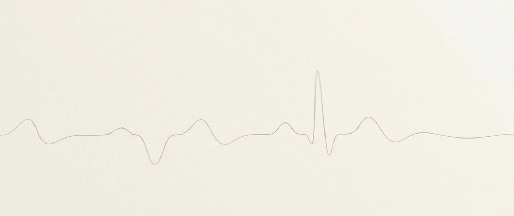

Cardiólogo en Elche · Clínica Elche Salud
Qué son · Signos de alarma · Cuándo consultar

Las palpitaciones son la percepción consciente de los latidos del corazón. Notas que el corazón late de forma diferente a lo habitual: más rápido, más fuerte, irregular, o con sensación de que "se salta un latido". Es una sensación desagradable que puede generar inquietud, pero que en la mayoría de casos no indica enfermedad grave.
Las palpitaciones son un síntoma, no un diagnóstico. Pueden tener causas muy diferentes, desde extrasístoles benignas que todo el mundo tiene hasta arritmias que requieren tratamiento. Por eso es importante saber explicar bien lo que sientes: tu relato es clave para orientar el diagnóstico.
La mayoría de las palpitaciones son benignas. Hay situaciones en las que hay que consultar de forma urgente:
Pérdida de conocimiento o mareo intenso (presíncope). Puede indicar una arritmia que compromete el riego sanguíneo cerebral.
Dolor o presión en el pecho. Puede ser señal de que el corazón está sufriendo durante el episodio.
Dificultad respiratoria importante. Ahogo marcado que impide hablar o moverse con normalidad.
Palpitaciones sostenidas que no ceden. Especialmente si son muy rápidas y duran más de unos minutos.
Antecedentes familiares de muerte súbita en jóvenes. Algunas cardiopatías hereditarias se manifiestan con arritmias.
Sin estos signos de alarma, pide cita programada con tu cardiólogo para valoración tranquila.
Latidos "extra" fuera del ritmo normal. Se sienten como un "vuelco" seguido de una pausa breve. Son muy frecuentes, todo el mundo las tiene en algún momento. En la mayoría de casos son benignas y no requieren tratamiento. Pueden aumentar con estrés, falta de sueño, cafeína o alcohol.
El corazón late más rápido de lo normal pero con ritmo regular. Es la respuesta fisiológica al ejercicio, el nerviosismo o el estrés. También puede aparecer con fiebre, anemia, hipertiroidismo o exceso de cafeína. No es una arritmia en sí.
Las aurículas laten de forma rápida y desorganizada. Se sienten como palpitaciones irregulares, caóticas, sin ritmo claro. Pueden aparecer en episodios breves o mantenerse de forma continua. Requieren valoración cardiológica porque aumentan el riesgo de ictus si no se tratan adecuadamente.
Episodios de latidos muy rápidos (140–200 lpm) que empiezan y terminan de golpe. Duran desde segundos hasta horas. Se sienten como una "salva" rápida y regular. Habitualmente no son peligrosas pero conviene estudiarlas.
Se originan en los ventrículos. Pueden ser desde extrasístoles benignas hasta taquicardias que requieren tratamiento urgente. La diferencia depende de si hay cardiopatía de base. Requieren estudio para determinar su gravedad.
Describir bien lo que sientes es fundamental para orientar el diagnóstico. Antes de venir, intenta responder estas 7 preguntas:
Cuantos más de estos detalles puedas aportar, más fácil será llegar al diagnóstico correcto.
¿A diario, semanal, mensual? ¿Han aumentado últimamente o se mantienen igual?
¿Segundos, minutos, horas? ¿Pasa enseguida o se mantiene un rato?
¿De golpe o gradualmente? Inicio y final bruscos orientan a ciertos tipos de arritmia.
¿Golpe seco + pausa (extrasístole) o latidos rápidos sostenidos (taquicardia)?
¿El latido es constante aunque rápido, o es caótico y desordenado? Puedes reproducirlo con golpecitos.
¿Ejercicio, reposo, tumbado, estrés, café, alcohol, falta de sueño? ¿O sin causa aparente?
¿Mareo, pérdida de conocimiento, dolor en el pecho o ahogo durante el episodio?
Consulta si las palpitaciones son frecuentes, van en aumento, son nuevas, o simplemente quieres saber a qué se deben. Aunque muchas son benignas, solo un estudio cardiológico puede confirmarlo y darte tranquilidad.
Las palpitaciones por estrés o nerviosismo son reales, no son "imaginación". Validar lo que sientes, estudiar que no hay una arritmia de fondo, y explicarte por qué ocurren es parte del abordaje.
La consulta se realiza en Clínica Elche Salud, con acceso directo a ECG, Holter 24h y ecocardiograma en la misma visita si es necesario.
Consulta cardiológica en Elche. ECG, Holter 24h y ecocardiograma disponibles en la misma clínica.
Valoración cardiovascular completa con ECG y ecocardiograma en la misma visita.
Ver detalles → Prueba diagnósticaRegistro continuo del ritmo cardíaco para detectar arritmias intermitentes.
Ver detalles → Motivo de consultaCuándo consultar, signos de alarma y características importantes para la valoración.
Ver más →